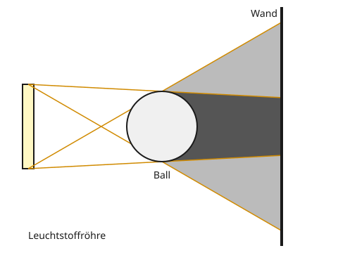

Teilschatten
Mit einem KI-Tutor lernen
Ein KI-Tutor erklärt dir diese Seite und hilft dir bei den Übungen. Wähl deinen Assistenten:
Mit Claude öffnen Mit ChatGPT öffnen Mit Mistral Vibe öffnen
Du nutzt dein eigenes Konto beim Anbieter. Der Assistent ist kein Angebot von lernapps.net: lernapps liefert nur Inhalte und Übungen. Die Wahl gilt für alle Seiten, nur auf diesem Gerät.
Warum hat der Schatten weiche Ränder?
Im Klassenzimmer hängen oft lange Leuchtstoffröhren. Wenn du deine Hand unter so eine Röhre hältst, ist ihr Schatten in der Mitte dunkel und wird zum Rand hin langsam heller. Bei einer kleinen Taschenlampe ist der Rand dagegen scharf.
Nach dieser Seite kannst du den Teilschatten einer ausgedehnten Lichtquelle erklären. Du brauchst dafür Kern- und Halbschatten von der Seite davor.
Viele kleine Lampen
Eine Leuchtstoffröhre ist eine ausgedehnte Lichtquelle: Sie ist lang, nicht klein wie ein Punkt. Stell sie dir vor wie viele kleine Lampen nebeneinander. Jede wirft ihren eigenen Schatten, und alle diese Schatten liegen ein bisschen versetzt übereinander.
Am einfachsten prüfst du es mit einer Ameise an der Wand. Frage: Wie viel von der Lampe sieht die Ameise am Ball vorbei?
- Sie sieht die ganze Lampe: Dort ist es hell.
- Sie sieht nichts von der Lampe: Dort ist der Kernschatten.
- Sie sieht einen Teil der Lampe: Dort ist der Teilschatten.
- Teilschatten
Der Bereich, den nur ein Teil des Lichts einer ausgedehnten Lichtquelle erreicht, weil der Gegenstand einen Teil der Lichtquelle verdeckt.

Dunkelgrau ist der Kernschatten, hellgrau sind die Teilschatten.
Quelle: eigene Zeichnung. Lizenz: CC-BY-4.0.So liest du die Zeichnung: Die Strahlen kommen von den beiden Enden der Röhre. Im dunkelgrauen Bereich verdeckt der Ball die ganze Röhre. In den hellgrauen Bereichen verdeckt er nur einen Teil von ihr. Je weiter eine Stelle vom Kernschatten weg ist, desto mehr von der Röhre ist von dort zu sehen und desto heller ist es.
Merke
Bei ausgedehnten Lichtquellen wie Leuchtstoffröhren gibt es Teilschatten. Der Teilschatten ist der Bereich, der nur von einem Teil des Lichts erreicht wird, weil der Gegenstand einen Teil der Lichtquelle verdeckt.
Beispiel
Die Ameise krabbelt die Wand hinauf
Eine Ameise krabbelt an der Wand hinter dem Ball von ganz unten nach ganz oben.
- Ganz unten sieht sie die ganze Röhre über den Ball hinweg: hell.
- Weiter oben schiebt sich der Ball vor das untere Ende der Röhre. Sie sieht nur noch einen Teil: Teilschatten, der immer dunkler wird.
- Direkt hinter dem Ball verdeckt er die ganze Röhre: Kernschatten.
- Weiter oben taucht nach und nach das obere Ende der Röhre wieder auf: wieder Teilschatten, dann hell.
Übung
Übung
Lösung
Richtige Antwort: Sie sieht die ganze Röhre. – ein heller Bereich; Sie sieht nichts von der Röhre. – der Kernschatten; Sie sieht einen Teil der Röhre. – ein Teilschatten
Wo die ganze Röhre zu sehen ist, ist es hell; wo nichts, ist Kernschatten; wo ein Teil, ist Teilschatten.
Mehr dazu:
Übung
Lösung
Weil dort noch Licht von einem Teil der Lichtquelle ankommt. richtige Antwort
Der Gegenstand verdeckt die Röhre nur zum Teil. Der Rest leuchtet noch dorthin.
Weil dort das Licht um den Gegenstand herumgeht.
Licht geht geradeaus. Es kommt von dem Teil der Röhre, den der Gegenstand nicht verdeckt.
Weil der Gegenstand dort etwas Licht durchlässt.
Der Ball lässt kein Licht durch. Der Unterschied kommt allein von der Lichtquelle.
In den Teilschatten fällt Licht von dem Teil der Lichtquelle, den der Gegenstand nicht verdeckt.
Mehr dazu:
Übung
Lösung
bei einer langen Leuchtstoffröhre richtige Antwort
Sie ist eine große, ausgedehnte Lichtquelle. Der Gegenstand verdeckt sie oft nur zum Teil.
bei einer kleinen LED-Taschenlampe
Sie ist fast wie ein Punkt. Ihr Schatten hat einen scharfen Rand.
bei einer winzigen Glühlampe
Eine winzige Lampe ist fast punktförmig. Teilschatten gibt es dann kaum.
Je ausgedehnter die Lichtquelle, desto breiter sind die Teilschatten am Rand.
Mehr dazu:
Übung
Lösung
Richtige Antwort: Die Aussage stimmt.
Einen Punkt sieht man entweder ganz oder gar nicht. Erst bei einer ausgedehnten Lichtquelle kann der Gegenstand einen Teil verdecken.
Mehr dazu: